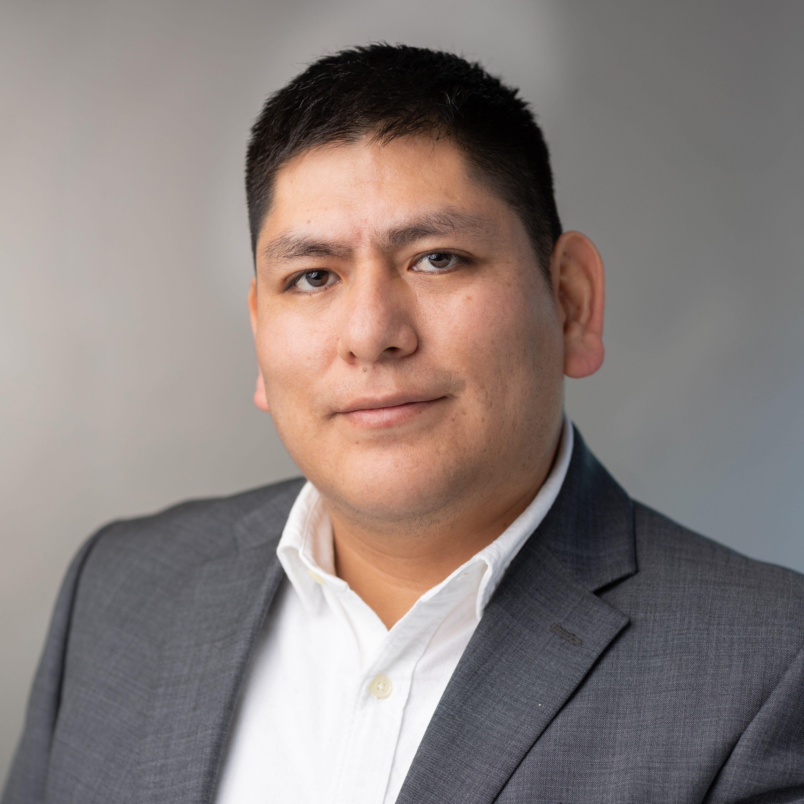

Sobre Nosotros
Instructores

Christian Cuba Samaniego
Assistant Professor – Carnegie Mellon University

Frank Britto Bisso
Incoming PhD – Carnegie Mellon University
Publicó 4 artículos como primer autor.
Synthetic Biology Summer School at CSHL New York 2024.
Synthetic Biology Summer School at CSHL New York 2024.
Segunda edición – 2024

Rodrigo Aguilar
UNAM
Publicación como primer autor en Open Biology.
Synthetic Biology Summer School at CSHL Asia 2025.
Synthetic Biology Summer School at CSHL Asia 2025.

Jennyfer Arismendiz Millones
PUCP
Escribiendo un artículo como primera autora.
Synthetic Biology Summer School at CSHL Asia 2025.
Synthetic Biology Summer School at CSHL Asia 2025.

Mijael Leo Espinoza
UNMSM
Escribiendo un artículo como primer autor.
Synthetic Biology Summer School at CSHL Asia 2025.
Synthetic Biology Summer School at CSHL Asia 2025.
César Antonio Castro Pareja
UNMSM
Escribiendo un artículo como primer autor.
Primera edición – 2022
- Frank Britto Bisso (PUCP)
Publicó cuatro artículos como primer autor
Synthetic Biology Summer School at CSHL New York 2024
Incoming PhD en Biología Computacional en Carnegie Mellon University